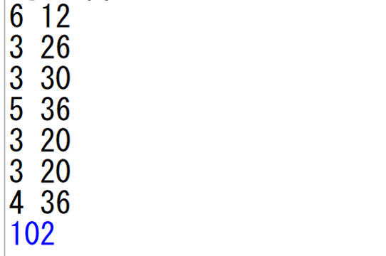

・課題テストの配点は国数英それぞれ100点ずつである
・ノー勉の場合、30点しか取ることができない
・最後まで終わらなかった課題がある場合、その課題の
点の上がり幅は0点とする
・勉強時間は12時間確保する
・当日に行うテスト対策については考えない
課題テストの総得点の最大値はいくつ？
192点
ノー勉のときの30×3=90点は固定なので、点の上がり幅だけを考える。
それぞれの課題の得点効率（１時間あたりの点の上がり幅）をまとめると
となる。
12時間を余ることなく使えるようにしながら
効率のよい課題を選んでいくという方針のもと考えると、
最も効率の良い課題である古典を選ぶと残り9時間。
次の効率の良い英文法を選ぶと残り５時間。
ここで、タクシード以外のすべての課題は３時間を要し、
選ぶと必ず２時間の無駄が生じてしまうため、タクシードを選ぶ。
そうすると、計12時間で、
点の上がり幅は30+36+36=102点。
よって総得点は90+102=192点となる。
１年生の皆さんは、週２時間の情報という教科で、（おそらく後期に）
pythonというプログラミング言語を学習します。
教科書に基本が載っていたり、ネット上に大量の情報が転がっていたりします。
そこで、この問題をpythonのプログラムにするとこうなります。
これに下のように入力してあげると…

※１行目は、左が課題の種類の数、右が勉強時間で、
２行目以降は各課題の、左が所要時間、右が点の上がり幅を表す
最後の行の青い数字はpythonが返してきた答えである
このように、最大の上がり幅を教えてくれます。
さらに、この入力の数字を変えたり、行数を増やしたりすれば、
「もしK君がもっと早くから課題に手を付けていたら」
「もし課題の量がもっと膨大であったなら」
というシミュレーションもできます！
…と、偉そうに語っていますが、私はこのプログラムの全てを理解しているわけではありません。
それに、教科書に載っているレベルからも逸脱しています。
pythonすごいなー程度の認識に留めていただければ幸いです。
【参考にしたサイト】